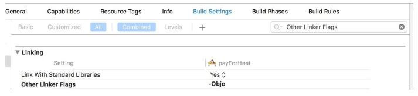

Integrate iOS SDK
The PayFort iOS SDK makes it faster and easy to build a perfect payment experience in your iOS app. PayFort offers powerful and customizable UI screens and elements that can be used out-of-the-box to collect your users’ payment details. We also expose the low-level APIs that power those UIs so that you can build fully custom experiences.
About the Software
Supported Platforms
PayFort iOS SDK is supported on all the apple devices running iOS 8 and above.
Localization
The FORT Mobile SDK supports both English and Arabic languages.
Screen Orientation
Portrait is the only orientation supported within the FORT Mobile SDK.
Supported Payment Methods
Through the first version of the FORT Mobile SDK, the Merchant has the ability to process a CREDIT CARD transactions only.
Supported Payment Options
The supported credit card payment options are VISA, MASTERCARD, American Express (AMEX), MADA and MEEZA.
Include the SDK to your Xcode Project
- Download and extract sdk.
- Drag the PayFortSDK.framework & PayFortSDK.bundle to Frameworks in Project Navigator.
- Create a new group Frameworks if it does not exist:
- Choose Create groups for any added folders.
- Make Sure to select Copy files if needed.

- Set -ObjC in the Other Linker Flags in the Target → Build Settings Tab.
- For Swift Projects Don’t forget to add the #import to the Bridging-Header.h
</dict>element
<key>NSAppTransportSecurity</key>
<dict>
<key>NSAllowsArbitraryLoads</key><true/>
</dict>
(void)applicationDidEnterBackground:(UIApplication *)application {
__block UIBackgroundTaskIdentifier backgroundTask; backgroundTask =
[application beginBackgroundTaskWithExpirationHandler: ^ {
[application endBackgroundTask:backgroundTask];
backgroundTask = UIBackgroundTaskInvalid; }];
func applicationDidEnterBackground(_ application: UIApplication) {
var bgTask: UIBackgroundTaskIdentifier = 0
bgTask = application.beginBackgroundTask(expirationHandler: {
application.endBackgroundTask(bgTask)
bgTask = UIBackgroundTaskInvalid
})
}
Installation
-
Import the PayFort Library.
#import <PayFortSDK/PayFortSDK.h> -
Initialize PayFortConrtoller with targeted environment, You set the target environment by setting one the two ENUM KPayFortEnviromentSandBox or KPayFortEnviromentProduction.
-
Objective C
PayFortController *payFort = [[PayFortControlleralloc]initWithEnviroment:KPayFortEnviromentSandBox];
-
Swift
let payFort = PayFortController.init(enviroment: KPayFortEnviromentSandBox)
-
-
Set Dictionary contain all keys and values for SDK.
Objective C
NSMutableDictionary *request = [[NSMutableDictionary alloc]init];
[request setValue:@“10000” forKey:@“amount”];
[request setValue:@“AUTHORIZATION” forKey:@“command”];
[request setValue:@“USD” forKey:@“currency”];
[request setValue:@ “email@domain.com” forKey:@“customer_email”];
[request setValue:@“en” forKey:@“language”];
[request setValue:@“112233682686” forKey:@“merchant_reference”];
[request setValue:`SDK TOKEN GOES HERE` forKey:@“sdk_token”];
[request setValue:@“” forKey:@“payment_option”];
[request setValue:@“gr66zzwW9” forKey:@“token_name"];
Swift
let request = NSMutableDictionary.init()
request.setValue(“1000”, forKey: “amount”)
request.setValue(“AUTHORIZATION”, forKey: “command”)
request.setValue(“USD”, forKey: “currency”)
request.setValue(“email@domain.com”, forKey: “customer_email”)
request.setValue(“en”, forKey: “language”)
request.setValue(“112233682686”, forKey: “merchant_reference”)
request.setValue(“token” , forKey: “sdk_token”)
- Call PayFort and Response callback
Objective C
[payFort callPayFortWithRequest:request currentViewController:self
Success:^(NSDictionary *requestDic, NSDictionary *responeDic) {
NSLog(@“Success”);
NSLog(@“responeDic=%@”,responeDic);
}
Canceled:^(NSDictionary *requestDic, NSDictionary *responeDic) {
NSLog(@“Canceled”);
NSLog(@“responeDic=%@”,responeDic);
}
Faild:^(NSDictionary *requestDic, NSDictionary *responeDic, NSString *message) {
NSLog(@“Faild”);
NSLog(@“responeDic=%@”,responeDic);
}];
Swift
PayFort.callPayFort(withRequest: request, currentViewController: self,
success: { (requestDic, responeDic) in
print(“success”)
},
canceled: { (requestDic, responeDic) in
print(“canceled”)
},
faild: { (requestDic, responeDic, message) in
print(“faild”)
})
SDK - Response
By default the response will be dictionary to show the sent data in addition to the status, response message and response code. The response will be ready in the registered call back handler with success, failed and cancelled. You can view the response by log the result as the followings:
Objective C
[payFort callPayFortWithRequest:request currentViewController:self
Success:^(NSDictionary *requestDic, NSDictionary *responeDic) {
NSLog(@“Success”);
NSLog(@“requestDic=%@”,requestDic);
NSLog(@“responeDic=%@”,responeDic);
}
Canceled:^(NSDictionary *requestDic, NSDictionary *responeDic) {
NSLog(@“Canceled”);
NSLog(@“requestDic=%@”,requestDic);
NSLog(@“responeDic=%@”,responeDic);
}
Faild:^(NSDictionary *requestDic, NSDictionary *responeDic, NSString *message) {
NSLog(@“Faild”);
NSLog(@“requestDic=%@”,requestDic);
NSLog(@“responeDic=%@”,responeDic);
NSLog(@“message=%@”,message);
}];
Swift
PayFort.callPayFort(withRequest: request, currentViewController: self,
success: { (requestDic, responeDic) in
print(“success”)
print(“responeDic=(responeDic)”)
print(“responeDic=(responeDic)”)
},
canceled: { (requestDic, responeDic) in
print(“canceled”)
print(“requestDic=(requestDic)”)
print(“responeDic=(responeDic)”)
},
faild: { (requestDic, responeDic, message) in
print(“faild”)
print(“requestDic=(requestDic)”)
print(“responeDic=(responeDic)”)
print(“message=(message)”)
})
Also there is an option to show response view directly in elegant view that show response results either its success or failed. By activating the following option:
Objective C
PayFort.IsShowResponsePage = YES;
Swift
PayFort.IsShowResponsePage = true;
Hidden PayFort loading
There is an option to hide loading view when SDK initialize the connection request. By disable the following option:
Objective C
PayFort.HideLoading = YES;
Swift
PayFort.HideLoading = true;
Custom Payment Designing
You have the option to provide your custom UI theme for the payment view by the followings:
- Create your nibFile .xib and set the name of Arabic xib same name with English one with suffix -ar.
- Link the xib with PayFortView and bind all the IBOutlets in interface section
IBOutlet UILabel *titleLbl;
IBOutlet UIButton *BackBtn;
IBOutlet UILabel *PriceLbl;
IBOutlet JVFloatLabeledTextField *CardNameTxt;
IBOutlet JVFloatLabeledTextField *CardNumberTxt;
IBOutlet JVFloatLabeledTextField *CVCNumberTxt;
IBOutlet JVFloatLabeledTextField *ExpDateTxt;
IBOutlet UILabel *cardNumberErrorlbl;
IBOutlet UILabel *cVCNumberErrorlbl;
IBOutlet UILabel *expDateErrorlbl;
IBOutlet UISwitch *savedCardSwitch;
IBOutlet UIButton *paymentBtn;
IBOutlet UILabel *saveCardLbl;
IBOutlet UIImageView *imageCard;
- Assign new created xib file to PayFort Controller.
[payFort setPayFortCustomViewNib:@“PayFortView2”];
Go to Full API
Check out our full API by visiting this link
Need further help?
Thanks for using PayFort.com. If you need any help or support, then message our support team at support@payfort.com.